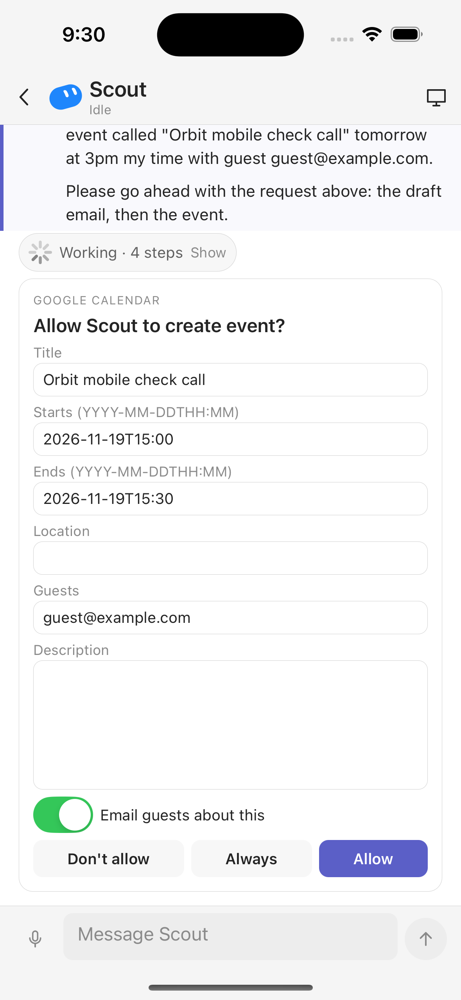
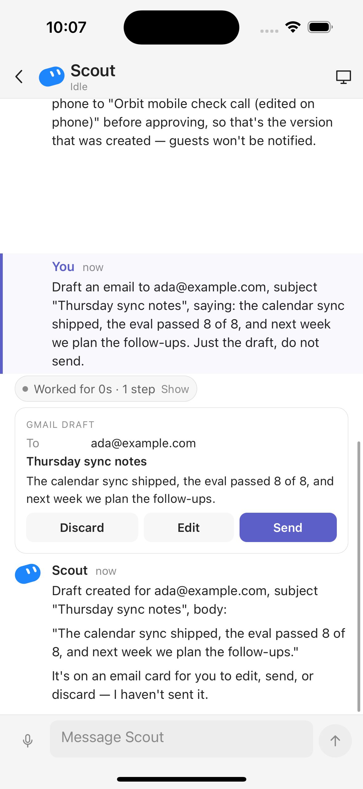
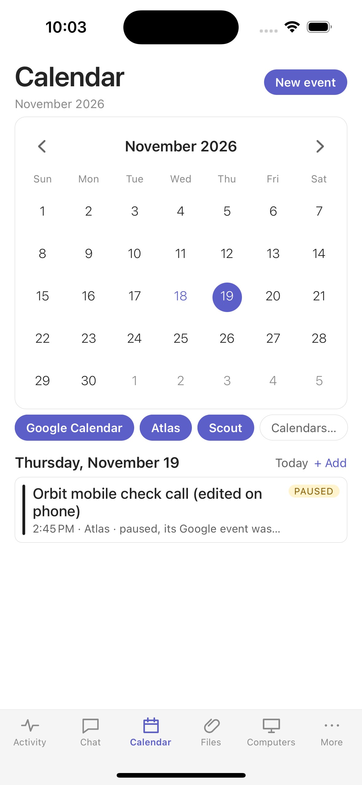

Using Orbit
Give a bot a job, connect the apps it needs, and follow its work in chat. This page walks through each part of the app in the order you will meet it.
Signing in
Orbit signs you in with Google through Composio when COMPOSIO_API_KEY is set. For local work, DEV_LOGIN=1 turns on an email-only form; never set it on a public address. ALLOWED_EMAILS limits who may sign in. On a remote install without Google configured, scripts/sign-in-link.sh you@example.com prints a one-time sign-in link.
The mobile app and other native clients sign in with POST /api/auth/sign-in and keep a bearer token; the browser and desktop app use a session cookie. Sessions last 30 days.
Finding your way around
The left rail has seven sections: Activity (a feed across every bot), Chat, Calendar, Calls, Files, Screens and Skills. In Chat, the list of bots and groups sits beside the open conversation; the details panel on the right holds the bot's Screen, Activity, Tasks and Library tabs. Settings (theme, accent colour, devices, voice, connected apps) open from your avatar at the bottom of the rail.
Creating a bot
- In Chat, choose New Bot.
- Give it a name, pick an avatar shape and colour, and choose personal or teammate mode.
- Orbit creates a Hermes home and engine for it, registers a computer, and gives it its own memory. The bot is ready once both its engine and its screen are up.
The default ceiling is ten bots (MAX_BOTS=10), sized for a 16 GB machine giving Docker 10 GB: a working bot's desktop and browser take about 0.3–0.75 GB, and idle bots are frozen, then stopped. A new managed bot inherits the primary agent's provider and API keys.
Open a bot's settings to change its name, label, description and instructions, its reasoning effort (low to xhigh), its voice, and to pin it. Make primary promotes a bot to team coordinator.
Chatting
Type in the composer and press Enter. You can attach files (they land in the bot's attachments) and use the mic button for dictation. While a bot works, the transcript shows what it is doing right now (thinking, browsing, running commands, waiting for you), how long it has been at it, and each tool call. When the turn ends it folds into a chip such as "Worked for 1m 14s · 2 steps" that you can open.
- Stop interrupts the running turn.
- New conversation clears the transcript and starts a fresh generation; the bot keeps its memory.
- Unread counts and previews show on each bot in the list; mute a group to keep it quiet.
Cards: when a bot asks you
| Card | Appears when | Your options |
|---|---|---|
| Approval | A bot wants to run a Composio action that writes (send, post, delete). | Allow once, Always (lets this bot run that action without asking; off until you choose it, and listed under Always allow in settings), or Don't allow. Google actions show a review card you can Edit first (see Google Workspace). Unanswered approvals expire. |
| Question | A bot calls ask_user with a question and options. | Pick an option or type an answer; or dismiss. |
| Connect | A bot needs an app you have not connected (request_app_connection). | Connect through Composio's OAuth flow, or skip. |
| Draft | A bot prepared an email, Slack or chat message. | Edit it, send it or discard it. A Gmail draft is a real draft in your account until you send it. |
Saved "always" policies are listed under Settings and can be removed there.
Screens: each bot's computer
The Screens section shows one card per bot with its status (Awake, Sleeping). Open shows the bot's desktop live over VNC. From the viewer you can:
- Watch what the bot does in its browser, files and terminal.
- Take control to use your own mouse and keyboard, for example to finish a sign-in the bot cannot do. Hand back returns control and tells the bot to continue.
- Reset restarts a stuck desktop.
Idle containers are suspended after COMPUTER_IDLE_TIMEOUT_MIN minutes (30 by default) and resume when needed; the bot's home folder survives, so logins and files persist.
Groups and bot handoffs
Choose Group, name it, and pick at least two bots. A message in a group dispatches the bots it @mentions, or the whole room when nobody is mentioned (capped at three). Bots answer in the room with post_to_group. When a bot @mentions a peer, Orbit dispatches that peer one hop deeper, so you can ask one bot to consult another. Bots can also message each other directly with send_to_bot.
Calendar, routines and check-ins
- One-time event: pick a bot, a date and time, and the prompt it runs then.
- Recurring event: a cron preset (daily, weekdays, weekly) or a custom cron expression, in your time zone.
- Event routine: a Composio trigger (for example a new Gmail message) that wakes a bot with a prompt. These are stored as routines with a schedule of
event:<TRIGGER_SLUG>. - Check-ins: the primary bot can check in at times you choose and send one concise message or stay silent.
Bots can create and edit their own routines with the create_routine, update_routine and delete_routine tools. You can pause, run now or delete a routine from the bot's details.
Tasks, memory and files
Each bot keeps a task list (working, needs input, done), a memory of facts (review it, or compact the conversation, from settings), and a Library of files it saved. The Files section is one list over every bot's Library, message attachments and workspace, with preview and download.
Voice calls
Start a call from the composer. Orbit prefers on-device speech (sherpa-onnx STT, VAD and TTS) when the model files are installed, and falls back to the cloud voice (xAI) when they are not. Download local models from Settings → Voice. The spoken turn lands in the bot's normal transcript, with the call's summary and transcript on its end-of-call row. Per bot you can choose the voice, speed (0.7–1.5×), language and provider.
GPU voice and the talking avatar
On Windows and Linux with an NVIDIA GPU, choose GPU under Voice calls in a bot's details panel (Activity → Voice chat). In the desktop app, Install pulls the audio.cpp sidecar (about 4 GB) and Download fetches its models (about 5 GB). Nothing is downloaded until you click. Pick one of 38 LFM3-Audio voices, upload a portrait, and calls show it speaking, lip-synced on the audio clock. Replies are spoken a sentence at a time while the agent is still writing. Remove uninstalls the sidecar. On macOS, GPU voice is not offered, and calls use on-device voice.
Talk naturally: about 600 ms of silence ends your turn, and talking over the bot stops it. With the agent on a cloud model such as Claude Sonnet 4.5, the first words of the answer come about 2 seconds after you stop talking, and an 8 GB card is enough because the GPU only runs the voice models. To call from a phone, open Orbit over the sidecar's HTTPS address (set up in Setup), since browsers only allow the microphone on secure pages. Setup, every way to run it, and troubleshooting: Setup → GPU voice. Protocol and design: docs/voice-audiocpp.md.
Connected apps
Open Connect apps to link accounts through Composio (the server needs COMPOSIO_API_KEY; see Connecting apps with Composio). Google apps connect through Composio too. Bots ask for an app when they need one; reads run directly, writes wait for an approval card.
Google Workspace
With Gmail, Google Calendar, Google Sheets or Google Docs connected, every bot is told what it can do in each one, and anything that changes your data waits for you on a card made for it:
- Email: a bot writes a draft, and you see it as an email card. Edit changes the recipients, subject or text; Send sends it from your account; Discard deletes the draft. If a bot asks to send directly, it always waits for you.
- Calendar events: creating, changing or deleting an event shows its title, time, place and guests. Edit any of them before you allow it, choose this event, this and following or all events for a repeating one, and decide whether Google emails the guests (on by default).
- Sheets and Docs: a new sheet or doc is made at once and shows a card with its link. Changes to an existing one show each cell, or the text, before and after.
- Reads (searching mail, listing events, reading a sheet) run without asking and show as a line in the chat.



Your Google Calendar in Orbit
Once Google Calendar is connected, its events appear in Orbit's calendar every few minutes, from 30 days back to 90 days ahead, stored encrypted. Google events are outlined; your bots' events are filled. Choose which calendars to show with the Calendars… button. Click a Google event to edit or delete it in Google (no bot involved), or Duplicate as Orbit event: Orbit prefills a "Prepare me for…" task for your primary bot at the event's time, and you can pick another bot, a time before the meeting, or make it repeat. A one-time duplicate moves when its Google event moves, and is paused if the event is cancelled.



Models and subscriptions
In a bot's Engine panel, pick a provider and model, or leave both on the agent's default. Sign in to a subscription opens a terminal on the bot's own screen running Hermes' sign-in for that provider (for example Claude Pro/Max); finish it in the viewer and the bot uses that subscription from then on. Check your provider's terms before running an agent on a consumer subscription. Codex subscriptions always need their own sign-in.
Skills
A skill is a repeatable way of doing something, written as a SKILL.md (the Agent Skills format: frontmatter with a description, then the instructions in Markdown). Skills live in one library shared by all your bots. The Skills section has two tabs: Library for skills, and MCP servers for the tool servers in the primary agent's config, turned on or off per bot.
Using a skill
Type / in the composer to see the skills the open bot has, and pick one, or type /name anywhere in a message. When the message reaches the bot, each /name is replaced by that skill's instructions, so the bot follows them for that request. It works the same in messages between bots and in routine prompts. A bot also sees its skills listed in its instructions and can read one, with any files that came with it, using its read_skill tool; list_skills lists them and list_tools lists every tool, app and MCP server it has.


Adding a skill
- Write SKILL.md: choose Add skill, give it a name (lowercase letters, digits and hyphens, like
weekly-report) and write the SKILL.md. The frontmatter needs adescription, which is what bots read to decide when to use it. - From GitHub: paste
owner/repo,owner/repo/path/to/skillor a github.com link to a public repository. Orbit checks the repository, the branch or tag and each SKILL.md before installing anything, and lists the skills it found when there are several. The skill records the repository, the exact commit and who installed it, and brings the files in its folder (up to 50 files, 256 KB each). A repository that does not exist, a ref it does not have, or a SKILL.md without a valid name and description is refused with the reason. - By a bot: a bot that works out a repeatable way to do something can add it with its
create_skilltool. The library shows it as written by that bot.


Which bots have it
A new skill is available to every bot, including bots you create later. Turn it off for any bot that should not have it, or choose Only the Bots I pick so that only the bots you turn on have it (new bots then do not). A bot without a skill gets /name as plain text, cannot read it, and does not see it in its list. A bot's own settings show the skills it has, each with a Turn off button.


Skills written in a bot's settings before the library existed were moved into it, each available only to the bot that had it.
When something goes wrong
Bots are meant to keep working for as long as their computer is on, so a failure does not simply end what a bot was doing. Every request (a message, a routine, a teammate's ask) is kept until it finishes, and the app decides what happens after each failed attempt from a fixed set of rules. It tells you in the chat each time.
- The model provider is down or rate limiting. Hermes first retries on its own, for about four minutes, while the turn has produced nothing yet. When it gives up, or the failure comes part-way through the work, the app waits and tries again: after 15 s, 45 s, 2 min, 4 min, then every 8 min, for up to 20 minutes from the first failure. Each retry tells the bot why it stopped and which tool calls had already run, so it continues instead of starting over, and checks before repeating anything that sends or changes something. The chat shows, for example, "Quill paused because the model provider is not answering right now. Trying again in 45 s."
- Its agent stopped responding. The app restarts the bot's agent, clears the turn the agent lost (Hermes holds a conversation until a lost turn is acknowledged, rather than re-run something that may have half happened), and tries again at once. A turn that gets no word from its agent for 10 minutes, such as a tool call that never returns, is handled the same way, unless the bot is waiting for you to approve something.
- Its sign-in was refused. The app refreshes the sign-in the bot inherits from the primary agent and tries once more. If that fails too, the chat says to sign in again under Settings → Engine Auth.
- The model does not exist, the account is out of credit, or the conversation is too long. Retrying would not help, so the bot stops and the chat says what to change.
- The bot is stuck. The app stops the turn and sends the bot back to reassess when the same tool call fails three times with the same arguments, four tool calls in a row fail, one call returns the same result three times in a row, or a turn passes 60 tool calls. Hermes has already warned it once by then. The chat shows what it was stuck on, and the bot's reply starts by saying what it will try instead ("I was stuck on X, so I'm trying Y"). After two reassessments that do not get it unstuck, it stops and leaves the next step to you.
- The app restarts. A request that was running or waiting to retry carries on when the server is back. One interrupted more than 20 minutes earlier is not picked up again, and the chat says so.
Stop ends the turn and any retry the bot is waiting on. Sending a new message also cancels a waiting retry of your earlier request, since you are steering again; routines and requests from other bots keep retrying.
On your phone
The Expo app for iOS and Android has tabs for chats, activity, calendar, files, computers and settings, a thread view per bot, and a live VNC viewer. Review cards and the Google Calendar features above work on the phone too. On first launch, point it at your Orbit server's URL (or bake EXPO_PUBLIC_API_URL into the build) and sign in. Push notifications are registered with POST /api/push/register.